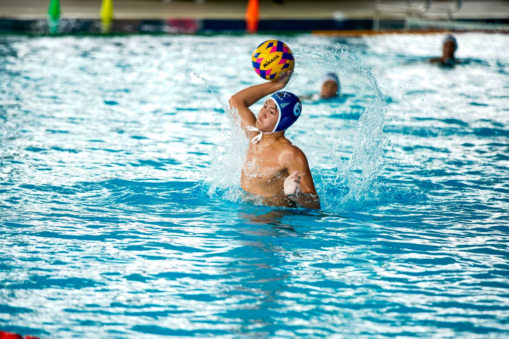

What Undefeated Champions Are Made Of
When Wilson High School's boys' water polo team recently claimed yet another undefeated Moore League championship, the athletic community took notice. Going wire-to-wire without a single loss is a rare and remarkable achievement in any sport, and water polo — with its demanding combination of swimming endurance, tactical thinking, and physical strength — makes that accomplishment even more impressive. For families and young athletes in Wesley Chapel, Land O' Lakes, and the broader Tampa Bay area, this kind of story is more than inspiring. It is instructional.
So what actually goes into building a team that does not lose? And more importantly, how can the young players right here in our community begin developing those same qualities today?
Championship Culture Starts in Practice
Undefeated teams rarely become undefeated by accident. The habits that produce a championship season are built slowly, repetitively, and often unglamorously — in early morning pool sessions, during film review, and through the kind of accountability that pushes players to show up even when motivation runs low.
For young athletes in water polo, this means treating every practice as an opportunity rather than an obligation. The technical skills that make a player dangerous in competition — accurate shooting, reading defensive schemes, efficient treading water — are all developed through consistent, focused repetition long before game day arrives.
Key Habits That Define Elite Water Polo Players
- Positional awareness: Understanding where every teammate and opponent is at all times requires constant mental engagement in and out of the water.
- Conditioning discipline: Water polo players swim thousands of meters during a single match. Aerobic and anaerobic fitness must be built systematically over months, not weeks.
- Communication: Championship teams talk constantly. Calling out plays, alerting teammates to threats, and encouraging one another are all skills that must be practiced.
- Coachability: Players who welcome feedback and apply corrections quickly accelerate their development far faster than those who resist instruction.
- Film and strategy study: Elite programs study opponents and their own performances to identify weaknesses and opportunities before stepping into the water.
The Role of Team Chemistry
One of the most underappreciated elements of an undefeated run is the chemistry that develops between players who genuinely trust one another. Water polo is an intensely collaborative sport. A brilliant individual play can be undone in seconds by a breakdown in team communication or a lapse in defensive rotation. Young athletes who invest in their relationships with teammates — who celebrate each other's growth and hold each other accountable — are building something that statistics cannot fully measure.
Parents play a meaningful role here as well. Encouraging young players to be good teammates, to support peers who are struggling, and to lead with humility on and off the deck helps shape the kind of character that championship programs are built around.
Building Toward Excellence in the Tampa Bay Area
The Tampa Bay area has a growing and passionate aquatic sports community, and programs like Nexar Aquatic Academy are proud to be part of developing the next generation of competitive water polo players and swimmers right here in Wesley Chapel and Land O' Lakes. Stories of undefeated championships from programs across the country remind us of what young athletes are capable of when they commit fully to their craft.
Whether your child is brand new to the sport or already competing at a club level, the path to becoming an elite water polo player begins with the fundamentals — and with a commitment to growth that extends far beyond the pool. At Nexar Aquatic Academy, we believe every young athlete in this community has the potential to build something championship-worthy, one practice at a time.
Ready to Start the Journey?
If your family is interested in learning more about competitive water polo or swimming development programs in the Wesley Chapel and Land O' Lakes area, we invite you to reach out and discover what intentional, expert-guided training can do for your young athlete's future in the water.
Ready to get in the water?
First practice is completely FREE — no commitment needed.